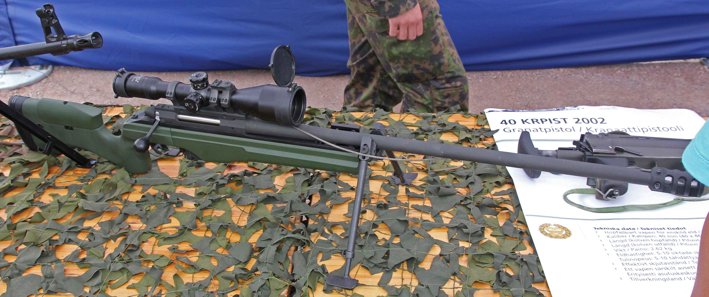

TRG狙擊步槍

薩柯TRG-22／42（英語：Sako TRG-22/42）是一系列由位於芬蘭里希邁基的槍械製造商薩柯公司所研製和生產的手動狙擊步槍。TRG-22發射.260雷明頓（.260 Remington，6.5-08 A-Square，6.5×51公釐）和標準型.308 Winchester口徑彈藥，而TRG-42則裝有較大型的槍機和槍管作為標準組件，以發射火力和射程都更強大的.300溫徹斯特麥格農（7.62×67公釐）和.338拉普麥格農（8.6×70公釐或8.58×70公釐）口徑彈藥。
- 薩柯TRG-22／42狙擊步槍可以選擇單調的橄欖色、土黃色、沙色或黑色固定槍托，也可以選擇折疊槍托。
薩柯TRG-22／42的槍口通常裝有制退器以減少後座力、槍口上揚和槍口焰。薩柯公司原廠生產的TRG狙擊步槍往兩側排氣和可拆卸。一般而言，TRG都會配備一具卡爾·蔡司公司或是施密特-本德爾（簡稱：S&B）警用神槍手二型（英語：Police Marksman II，簡稱：PM II）固定放大倍率或可變倍率光學狙擊鏡。如果使用者希望有更多的靈活性，必需在不同的距離或是寬闊的視場內進行射擊的話，就可以使用可變倍率光學狙擊鏡。
TRG系統的獨特之處就是幾乎是一個專門設計的狙擊步槍，而不是現有的一些通用步槍的精確化版本。TRG狙擊步槍可以有啞光或是錳磷化兩種表面處理。